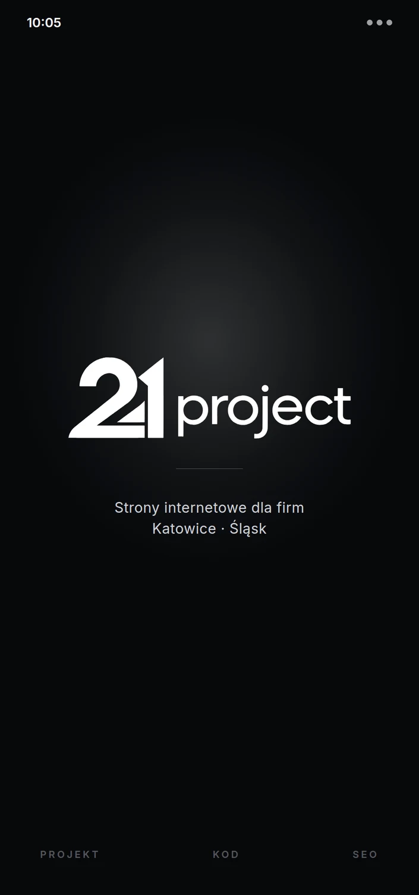

/01
Projektowanie wnętrz
COS Interiors
Rozbudowana, elegancka strona pracowni wnętrzarskiej, w której fotografia, oferta i ankieta projektowa prowadzą klienta przez spójną historię marki.
- Strona wielopodstronowa
- Portfolio
- Mobile
Strony internetowe
Projektuję nowoczesne strony internetowe dla firm — od designu po wdrożenie.
01 / Realizacje
Każda powstała od zera — pod konkretną markę, odbiorcę i cel biznesowy.
/01
Projektowanie wnętrz
Rozbudowana, elegancka strona pracowni wnętrzarskiej, w której fotografia, oferta i ankieta projektowa prowadzą klienta przez spójną historię marki.


/02
Projektowanie wnętrz · Ciechanów
Studio wnętrzarskie potrzebowało strony w tonie własnych realizacji — spokojnej, ciemnej i opartej na fotografii.


/03
Projektowanie wnętrz
Elegancka wizytówka pracowni zbudowana wokół portfolio i krótkiej ścieżki do zapytania o projekt.


/04
Wnętrza prywatne
Kameralna strona dla projektantki wnętrz — ciepła paleta i czytelnie opisany proces współpracy.


/05
Komis i detailing · Miastko
Dwie usługi na jednej stronie — sprzedaż aut i detailing — rozdzielone na wyraźne ścieżki.


/06
Bramy i ogrodzenia · Ruda Śląska
Techniczna strona nastawiona na wycenę, z lokalnym SEO pod miasta w regionie.
02 / Oferta
Bez ukrytych dopłat. Zakres i termin ustalamy przed rozpoczęciem realizacji.
Zwięzły landing page — jedna strona, bez podstron. Konkretnie przedstawia ofertę i prowadzi do kontaktu.
1500zł
Zapytaj o pakiet ↗Pełna strona firmowa z trzema podstronami. Więcej miejsca na usługi, realizacje i historię firmy.
2000zł
Zapytaj o pakiet ↗Wszystko ze Standardu oraz SEO. Strona od początku pracuje na widoczność firmy w Google.
3000zł
Zapytaj o pakiet ↗Audyt, optymalizacja i pozycjonowanie strony, którą już masz — bez znaczenia, kto ją wcześniej wykonał.
1000zł
Zapytaj o pakiet ↗03 / Proces realizacji
Prosty proces bez technicznego chaosu. Przez cały czas masz ze mną kontakt i widzisz, jak rozwija się projekt.
Poznaję Twoją firmę, potrzeby i cel strony. Ustalamy zakres, cenę oraz termin.
Przekazujesz logo, zdjęcia i informacje. Pomagam uporządkować to, czego jeszcze brakuje.
Otrzymujesz pierwszy kierunek. Nanoszę zmiany i wspólnie dopracowujemy każdy ekran.
Finalizuję wersję mobilną, podpinam domenę i publikuję gotową stronę.
Przez cały proces jesteśmy w kontakcie — na każdym etapie możesz zgłosić pytanie lub zmianę.
Porozmawiajmy ↗04 / Dlaczego ja
Nie przekazuję Cię między grafikiem, handlowcem i programistą. Od pierwszego szkicu po publikację rozmawiasz bezpośrednio ze mną.
Projekt pod markę
Układ, język i styl wynikają z tego, komu sprzedajesz — nie z gotowego szablonu.
Jedna rozmowa
Mniej nieporozumień, szybsze poprawki i pełna kontrola nad efektem.
Po publikacji
Pomagam z domeną, uruchomieniem, zmianami i dalszym rozwojem strony.
05 / Najczęstsze pytania

Bez technicznego żargonu
Najczęściej od 7 do 14 dni od otrzymania materiałów. Dokładny termin ustalamy przed startem.
Tak. Na każdym etapie widzisz postęp i możesz zgłaszać zmiany — nic nie jest robione bez Twojej akceptacji.
Tak. Każdy projekt dopracowuję osobno na komputerach, tabletach i telefonach.
Logo, zdjęcia i podstawowe informacje o firmie. Jeśli nie masz gotowych tekstów, pomogę je uporządkować.
Tak. Mogę podpiąć domenę, uruchomić stronę i skonfigurować podstawowe narzędzia Google.
Landing page to 1500 zł, strona firmowa z trzema podstronami 2000 zł, a wersja z optymalizacją SEO 3000 zł. Sam audyt i pozycjonowanie istniejącej strony kosztuje 1000 zł. Cenę ustalam przed startem i nie zmienia się w trakcie.
Tak. Najwięcej projektów prowadzę dla firm z Katowic, Gliwic, Chorzowa, Zabrza i Sosnowca, ale cały proces da się poprowadzić zdalnie — strony na tej stronie powstały też dla firm z Ciechanowa i Miastka.
06 / Obszar działania
Większość projektów prowadzę dla firm z aglomeracji górnośląskiej. Spotkanie na żywo jest możliwe, ale nigdy nie jest warunkiem — cały proces da się poprowadzić przez telefon i maila.
Miasta, w których pracuję najczęściej
Poza aglomeracją pracuję zdalnie — realizacje z tej strony powstały między innymi dla pracowni wnętrz z Ciechanowa i komisu z Miastka.
Lokalne SEO, nie tylko ładna strona
Strona firmowa bez ustawionego SEO nie pojawi się w wynikach na frazy z nazwą miasta. W pakiecie Premium opisuję usługi pod konkretne zapytania, porządkuję nagłówki i dane strukturalne, podpinam Google Search Console i pomagam uzupełnić wizytówkę Google, żeby firma była widoczna w mapach i w lokalnych wynikach.
Jeśli masz już stronę, samo pozycjonowanie zamawiasz osobno — zaczynam wtedy od audytu i pokazuję, co realnie blokuje widoczność.
Zapytaj o widoczność w swoim mieście ↗07 / Kontakt
Opisz krótko swoją firmę. Odpowiem z konkretną propozycją, wyceną i możliwym terminem.